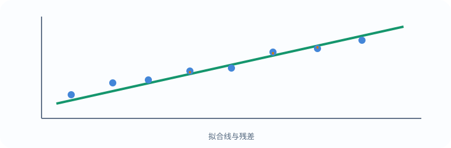

第14章：简单线性回归
相关分析概括变量之间的关联；回归分析进一步描述在给定模型下，结果变量的条件均值如何随预测变量变化。
本章学习目标
- 最小二乘法
- R²
- 残差分析

交互实验：调整斜率，观察预测值变化
调整线性模型斜率，观察给定 x 值下的预测值。
交互控件加载后，可调整参数并观察统计量的变化。
简单线性回归（Simple Linear Regression）是整个回归家族中最基础、最优雅的成员。它只有两个变量：一个自变量 X 和一个因变量 Y，并且假设它们之间的关系是一条直线。别小看这个简单的模型——理解了它的原理，你就理解了最小二乘法、R²、残差分析这些在更复杂的模型（多元回归、逻辑回归、甚至深度学习）中同样适用的核心概念。
14.1 回归的几何直觉：找一条最佳直线
想象你有一堆散点，每个点代表一个人的年收入（X）和年消费金额（Y）。你想用一条直线来概括 X 和 Y 的关系。但问题是：这些点不会完美地排列在一条直线上——每个人都有自己的消费习惯。那么，什么样的直线才是"最佳"的呢？
这就是回归的核心问题：找一条直线，让它"尽可能接近"所有的数据点。
回归直线的一般形式：
Y = β₀ + β₁X + ε
其中 β₀ 是截距（当 X = 0 时 Y 的期望值），β₁ 是斜率（X 每增加一个单位，Y 平均变化多少），ε 是误差项（直线无法解释的部分）。
14.2 最小二乘法（OLS）的原理
普通最小二乘法（Ordinary Least Squares, OLS）是最常用的回归参数估计方法。它的数学推导很简单——对 SSE 关于 β₀ 和 β₁ 求偏导，令其为零，然后解方程组。
结果就是：
β₁ = Σ((Xᵢ - x̄)(Yᵢ - ȳ)) / Σ(Xᵢ - x̄)²
β₀ = ȳ - β₁x̄
注意到没有？β₁ 的分子和 Pearson 相关系数的分子是一样的！实际上，β₁ = r × (sᵧ / sₓ) ，其中 r 是 Pearson 相关系数，sᵧ 和 sₓ 分别是 Y 和 X 的标准差。这很好地展示了相关和回归的紧密联系。
14.3 R² 的解释与局限
R²（决定系数）是回归中最常用的拟合优度指标。它的定义是：
R² = 1 - SSE / SST = SSR / SST
其中 SST 是 Y 的总变异（总平方和），SSE 是未被模型解释的变异（残差平方和）。所以 R² 就是"模型能解释的变异比例"。在简单线性回归中，R² = r² —— 正好是相关系数的平方。
R² 高只说明模型的拟合度好，但不说明模型正确。尤其对于时间序列数据，两个不相关的趋势变量之间的回归经常产生极高的 R²。这个陷阱叫做"虚假回归"（spurious regression）。判断模型是否正确，关键看残差分析、领域知识、以及因果关系理论。
14.4 残差分析：检查模型假设
OLS 回归的有效性依赖于几个关键假设（缩写为 LINE）：
- L - Linearity（线性）：X 和 Y 的关系是线性的。
- I - Independence（独立性）：各观测值相互独立。
- N - Normality（正态性）：残差服从正态分布（对于推断来说）。
- E - Equal Variance（同方差性）：残差的方差不随 X 变化。
残差分析就是通过检查残差（实际值 - 预测值）来判断这些假设是否成立。如果残差图中出现明显的模式（如漏斗形、弧形），就说明某些假设被违反了。
14.5 回归诊断
以下是回归诊断中需要关注的几个问题：
| 问题 | 表现 | 后果 | 解决方法 |
|---|---|---|---|
| 异方差 | 残差散点图呈"漏斗形" | 标准误估计不准 | 使用稳健标准误（HCSE） |
| 离群点 | |残差| > 3σ | 扭曲回归系数 | 检查数据、使用稳健回归 |
| 杠杆点 | X 值极端 | 对回归线影响过大 | 计算杠杆值、Cook's distance |
| 非正态残差 | Q-Q图偏离对角线 | p值不可靠 | 大样本下可忽略（CLT） |
下面是用 statsmodels 进行完整回归诊断的 Python 代码：
import numpy as np
import pandas as pd
import statsmodels.api as sm
import matplotlib.pyplot as plt
from scipy import stats
# 生成模拟数据：用多年的经验预测工资
np.random.seed(42)
n = 100
experience = np.linspace(0, 20, n)
salary = 30000 + 4000 * experience + np.random.normal(0, 8000, n)
# 添加一个离群点（被严重高薪的人）
salary[-1] = 150000
# 构建 DataFrame
data = pd.DataFrame({'exp': experience, 'salary': salary})
# 添加截距项
X = sm.add_constant(data['exp'])
y = data['salary']
# 拟合 OLS 模型
model = sm.OLS(y, X).fit()
print(model.summary())
# === 残差诊断 ===
residuals = model.resid
fitted = model.fittedvalues
# 1. 残差 vs 拟合值图（检查线性和同方差性）
# plt.scatter(fitted, residuals)
# plt.axhline(y=0, color='r', linestyle='--')
# plt.xlabel('拟合值')
# plt.ylabel('残差')
# plt.title('残差 vs 拟合值图')
# plt.show()
# 2. Q-Q图（检查正态性）
# sm.qqplot(residuals, line='s')
# plt.title('Q-Q 图')
# plt.show()
# 3. 计算 Cook's distance（识别强影响点）
influence = model.get_influence()
cooks_d = influence.cooks_distance[0]
n = len(data)
threshold = 4 / n
influential_points = np.where(cooks_d > threshold)[0]
print(f"\nCook's distance 阈值: {threshold:.4f}")
print(f"强影响点索引: {influential_points}")
# 4. 学生化残差（识别离群点）
studentized_residuals = influence.resid_studentized_internal
outliers = np.where(np.abs(studentized_residuals) > 3)[0]
print(f"离群点（|学生化残差| > 3）索引: {outliers}")
# 5. 异方差检验（Breusch-Pagan）
from statsmodels.stats.diagnostic import het_breuschpagan
bp_test = het_breuschpagan(residuals, X)
print(f"\nBreusch-Pagan 异方差检验:")
print(f"LM统计量: {bp_test[0]:.3f}, p值: {bp_test[1]:.4f}")
if bp_test[1] < 0.05:
print("存在异方差问题，建议使用稳健标准误")
# 使用稳健标准误重新拟合
model_robust = sm.OLS(y, X).fit(cov_type='HC3')
print(model_robust.summary())
else:
print("未发现明显的异方差")14.6 R² 很高但模型完全错误
另一个更微妙的例子：有人用某城市的人口数量预测该城市图书馆的数量，得到了 R² = 0.97 的完美结果。确实，人口越多的城市图书馆越多——但这真的是一个"模型"吗？如果你告诉市政府"为了增加图书馆，我们要先增加人口"，这就完全因果倒置了。R² 再高也不能代替逻辑推理。
每次你得到一个很高的 R² 时，都应该问自己几个问题：这个关系在逻辑上说得通吗？是否存在遗漏变量？数据是否存在时间趋势？R² 高可能是因为偶然，也可能是因为数据质量问题——而不仅仅是因为你的模型好。
简单线性回归是通向更复杂模型的起点。掌握了它的原理和诊断方法，你就为学习多元线性回归、逻辑回归乃至更高级的统计模型打下了坚实的基础。下一章，我们来讨论当今统计学中一个非常有争议的话题——p 值与统计显著性的危机。
本章小结
R² 衡量拟合程度，残差诊断与设计假设决定模型是否可信。